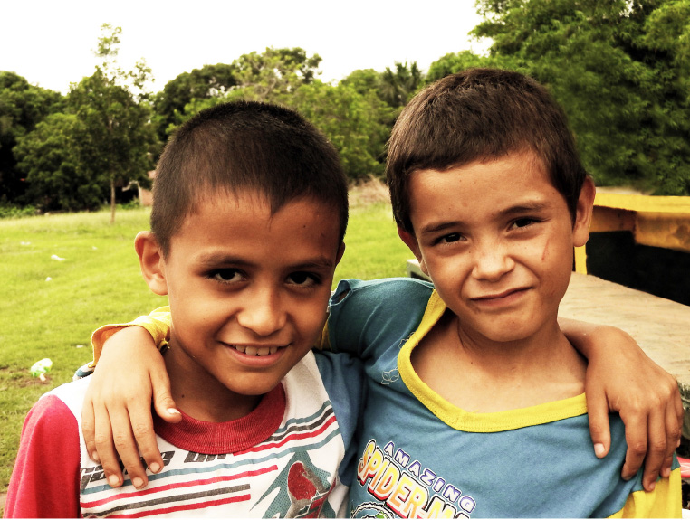

VINCÚLATE
HAZ UNA DONACIÓN

Puedes donar para nuestro proyecto de temporada en Global Giving o hacer una aporte por Paypal
También recibimos donaciones en especie, como:
Implementos deportivos
Uniformes deportivos
Pintura
Plantas
Útiles escolares
Para este tipo de donación comunícate con egallego@gipcolombia.org
*Si eres Colombiano y quieres obtener tu certificado de donación para deducción de impuestos, comunícate con dsanabria@gipcolombia.org
APADRINA
Si quieres vincularte apadrinando un niño, niñas o joven de nuestros programas u otorgar una beca de estudio en el Colegio Las Aguas, contáctate con nosotros enviando un correo a amosquera@gipcolombia.org
HAZ VOLUNTARIADO
Únete al grupo de personas que han hecho parte del equipo de voluntarios y voluntarias de GIP. No solo de Colombia, sino también estudiantes y profesionales de Alemania, Reino Unido, Suiza, Bélgica, Hungría, Polonia, Canadá, Estados Unidos y Japón han contribuido con la construcción de paz a partir de su talento, conocimientos o deseos de ayudar. Aquí te damos algunas ideas de cómo participar:
-
Trabajo en comunidad: Logística, entrenamiento deportivo o planeación y desarrollo de actividades. Esta última, solo en caso de que seas profesional de las ciencias sociales.
-
Comunicaciones: Creación de contenidos, comunicación externa, reportaje, diseño gráfico, producción audiovisual, fotografía, gestión de redes sociales y traducciones.
-
Recaudación de fondos: Crowdfunding y fundraising, gestión internacional, área de apadrinamiento.
TRABAJA CON NOSOTROS
El talento humano es el activo más importante de nuestra organización, si quieres hacer parte de este valioso equipo, postúlate por una de nuestras vacantes.
Coordinador(a) Regional Programa Paz en Movimiento - Putumayo
Perfil: Profesional en Deporte con experiencia en el área del deporte para el desarrollo y trabajo comunitario ó profesional en ciencias sociales y humanas con experiencia en proyectos deportivos. Cualquiera de los dos perfiles deberá certificar trabajo con niños, niñas y adolescentes de al menos 3 años.
Lugar de residencia: Puerto Asís.
Hoja de vida a: emesa@gipcolombia.org
Coordinador(a) Regional Programa Paz en Movimiento - Nariño
Perfil: Profesional en Deporte con experiencia en el área del deporte para el desarrollo y trabajo comunitario ó profesional en ciencias sociales y humanas con experiencia en proyectos deportivos. Cualquiera de los dos perfiles deberá certificar trabajo con niños, niñas y adolescentes de al menos 3 años.
Lugar de residencia: Pasto.
Hoja de vida a: emesa@gipcolombia.org
CONTÁCTANOS
GRUPO INTERNACIONAL DE PAZ
Av. Nutibara #75-14
Medellín - Antioquia, Colombia
+ 57 4129208
@Grupointernacionaldepaz
info@gipcolombia.org